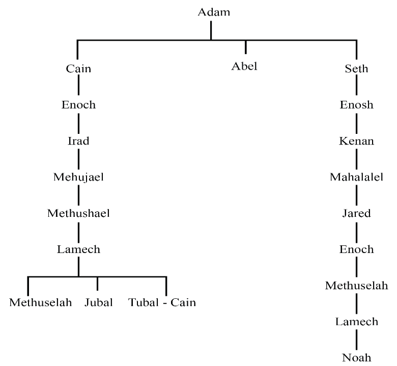

The Lineage from Adam to Noah
Adam and Eve got a third son and Eve named him Seth saying, “God has appointed for me another child instead of Abel, for Cain killed him.” Adam was hundred and thirty years old when he got this son in his own likeness and after his image. He lived eight hundred years more and he had other sons and daughters. Thus, Adam lived nine hundred and thirty years (930). Then he died. Figure 3.7 shows the lineage of Adam to Noah.
